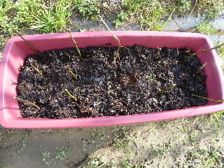
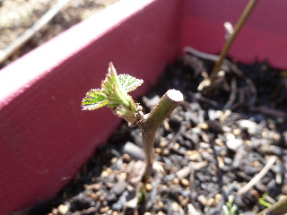
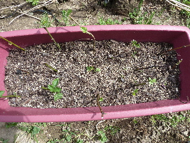
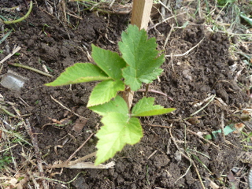
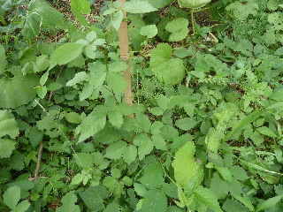
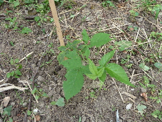
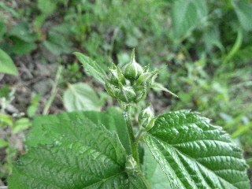
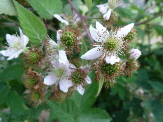

ブラックベリーを挿してみました。
更新日 : 2014/02/16
去年の日記をみてたら、2月末には新芽が出てたので、それまでに挿し木したほうがいいかなと思ってプランタに挿しました。

どうでしょう？育つかな？
ネットで検索してみたら、ブラックベリーは7月に挿し木するみたいです。ふーん。じゃあ無駄になっちゃうかな？
まあ実験のつもりで、期待しないで観察します。でもこのブラックベリーは挿し木で増やしたものが販売してたんですけど、買ったのが初夏だったので、挿したのは春か冬だと思うんだけどなー。
ブラックベリーの挿し木から芽が出ました。
更新日 : 2014/04/06
プランターに挿したブラックベリーから芽が出ました。

暖かくなって、枝から芽が出ただけだと思います。
きっとまだ根は付いていないだろうな。
今後、成長するか枯れるか見守ることになります。
今までスモモとか杏子で失敗しているので、あんまり期待できないですが、成功して欲しいな。
ブラックベリーの挿し木の結果
2014/05/03
2月に挿し木したブラックベリーですが、5月になっても枯れていないので根が付いたかな？

今のところ15本中9本で若葉が出ています。
枝が緑色してて、これから芽がでるかも？ってのもあるので、2/3くらいの確率ですね。
これだけ増えればもう当分ブラックベリーを増やす必要はなさそうです。
植え替える場所を考えないと。数があるので、地植えも鉢植えもやりたいな。
挿し木のブラックベリーを地植えにしました。
更新日 : 2014/06/15
挿し木のブラックベリーに根が付いていそうなので、もう植え替えても大丈夫そうです。

プランターから引っこ抜いて地植えにしました。
プランターの中で根がしっかり張っていたので、植え替えの時にだいぶ痛めてしまいました。
大丈夫かな？この夏にどれくらい大きくなるかな。
ブラックベリーために草抜きをしました。
更新日 : 2014/08/02
しばらく面倒を見ていなかったら、雑草に囲まれて見えなくなっていました。

一度草抜きはしたんですが、草が成長するのは速いですね。草だらけです。

草抜きしてすっきりしました。この状態が何日持つかな？
去年挿し木したブラックベリーに花が付きました。
更新日 : 2015/05/31
1年では出来ないと思っていたんですが、出来るんですね。

でも去年挿し木したブラックベリーで、花が付いたのはこの1本だけです。
一番成長が遅い株だけ花が付きました。

親株は花が終わって実が大きくなっています。
若い株は成長も遅いです。